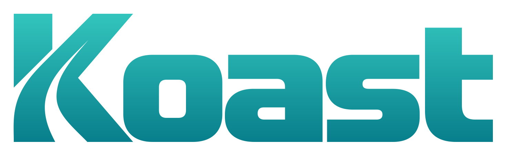
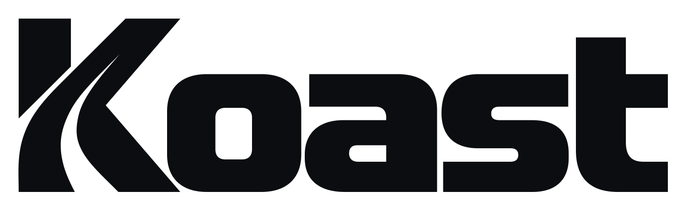

EXPLORATORY · LIVE MOTION
Koast Driver
1 · Macro
2 · Teal field
3 · Turn
4 · Focus


DRIVER
Start inside the K’s road curve, then pull back to the full wordmark.
Replay
Pause
Loops for comparison · Driver app unchanged